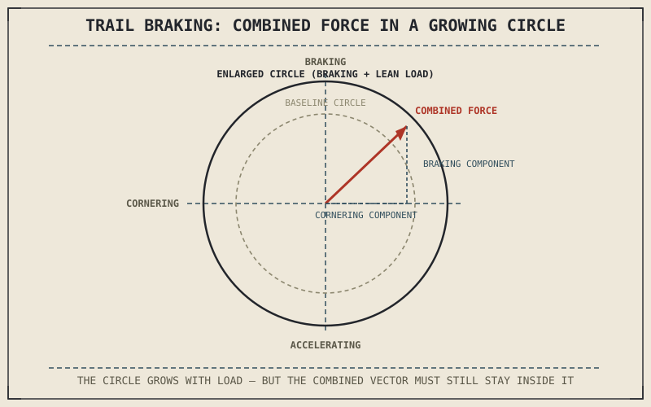

Trail braking — carrying brake pressure into the early part of a corner rather than releasing it entirely before leaning — is standard technique among skilled riders, and every chapter in this part so far has quietly built toward explaining exactly why it works and exactly how it can go wrong. Braking and cornering each draw on the same tyre's grip in their own distinct way, and doing both at once means their two separate stories from this part finally have to be combined.
Chapter 8.5 closed by naming this combination as its next subject. This chapter delivers it.
Two Load-Transfer Effects, Happening at Once
Trail braking asks the front tyre to manage two simultaneous demands: the forward weight transfer from braking, described in Chapter 7.5, which increases front-tyre normal load and expands its friction circle in the fore-aft direction, and the lean-induced load increase from cornering, described in Chapter 8.5, which adds to that same tyre's normal load along the lean axis. Both effects genuinely do increase available grip at the front tyre — this is why trail braking, done well, is not simply borrowing risk from one system to feed another, but a real way to keep the front tyre well-loaded and gripping through the transition from braking to full lean.
Why the Two Demands Don't Simply Add Safely
The complication is that the friction circle from Chapter 6.4 governs the combined vector of braking and cornering force, not each one independently — the tyre has to supply centripetal force and braking force from the same static friction budget at the same instant, even though the normal load increases from Chapter 7.5 and Chapter 8.5 are each expanding that budget's total size. Trail braking is precise specifically because it's balancing a genuinely growing grip budget against a combined demand that's also growing, and asking for slightly more of either force than the tyre's current combined limit allows produces exactly the friction circle violation Chapter 6.4 first described — a slide, but now potentially in a diagonal direction, part braking-induced and part cornering-induced at once.
Trail braking works because braking and cornering each add normal load to the same tyre — but it demands precision because both are also drawing on that tyre's grip from the same shared circle, in a combined direction that's easy to misjudge.

A friction circle diagram showing a combined force vector made of both a braking component and a cornering component pointing diagonally, staying inside a circle whose radius is enlarged by the combined normal load increase from both braking and lean.
Why Skilled Trail Braking Releases Pressure as Lean Increases
This is the actual physical reason skilled trail-braking technique progressively releases brake pressure as lean angle increases through a corner: as more of the tyre's combined grip budget gets committed to centripetal force, less remains available for braking force within that same circle, even though the circle's total size is growing from the added lean-induced load. Holding constant brake pressure while lean angle keeps increasing eventually asks for a combined force vector the friction circle can no longer supply, regardless of how much bigger that circle has become — which is exactly the mistake trail-braking technique is designed to avoid.
A Common Misconception, Cleared Up Early
It's easy to think trail braking is simply "riskier" because it combines two separately risky actions. What actually makes it demanding isn't that braking and cornering are each dangerous — this part has shown both individually expand available grip through increased normal load — it's that combining them requires tracking a single, continuously shifting combined limit rather than two separate, more predictable ones. Skilled trail braking isn't ignoring risk; it's precisely managing the one genuinely more complex variable this combination introduces.
Where This Leads
Load transfer, whether from braking, cornering, or both together, has so far been discussed only in terms of the tyres' contact patches. At real speed, aerodynamic forces start acting on the motorcycle and rider directly, adding forces this part hasn't yet accounted for. Chapter 8.7 turns to aerodynamics next.
Key Concepts to Remember
- Trail braking combines braking-induced and cornering-induced normal load increases at the front tyre, both genuinely expanding available grip.
- Braking and cornering force must still combine within one shared friction circle, even though that circle's total size is growing from added load.
- Skilled trail braking releases pressure progressively as lean increases specifically to keep the combined force vector within the shifting friction circle.
Cross-References
| ← Ch. 7.5 | Established braking-induced load transfer at the front tyre; this chapter combines that effect with the cornering-induced load transfer from Chapter 8.5. |
| ← Ch. 8.5 | Established cornering-induced load transfer increasing normal load and grip; this chapter shows that effect combining with braking in trail braking. |
| ← Ch. 6.4 | Introduced the friction circle governing combined force; this chapter shows that circle's size and the demand on it both changing simultaneously during trail braking. |
| → Ch. 8.7 | Covers aerodynamic drag and lift, the next force category this part has not yet accounted for. |